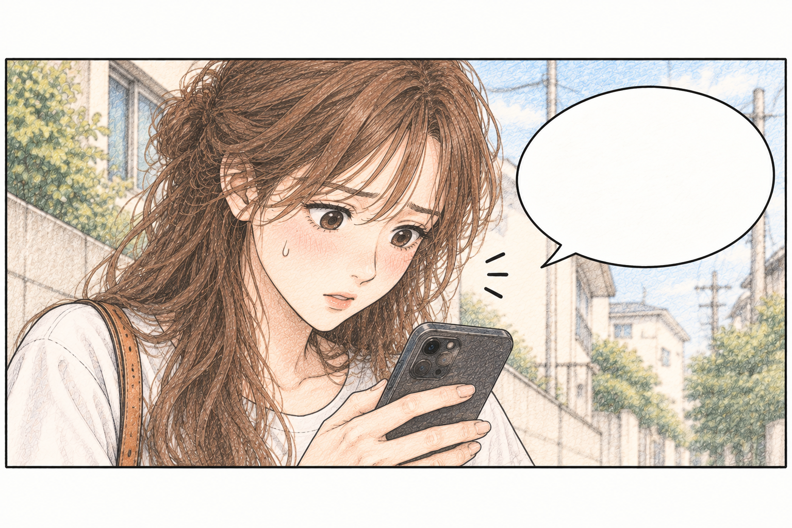

선생님들과 만드는 놀이의 좋은 변화 ♡
WEEKLY CURATION · SEPTEMBER 03
9월 3주차,
이번 주엔
이렇게 놀아요
- 01가을이 왔어요
- 02추석 전에 하면 좋은 놀이
- 03요즘 교실에서 반응 좋은 활동
❧

이번 주도 즐겁게 놀아봐요!
FOR A BETTER TOMORROW
지금, 주목할 이야기
선생님을 위한 놀이와 아이의 성장을 담은 이야기를 전해요.
❧
계절 놀이
→
가을이 왔어요
자연을 느끼는 가을 놀이 아이디어
○
특별한 날
→
추석 전에 하면 좋은 놀이
전통을 쉽고 재미있게 즐기는 방법
✎
교실 이야기
→
요즘 교실에서 반응 좋은 활동
선생님들의 생생한 놀이 사례